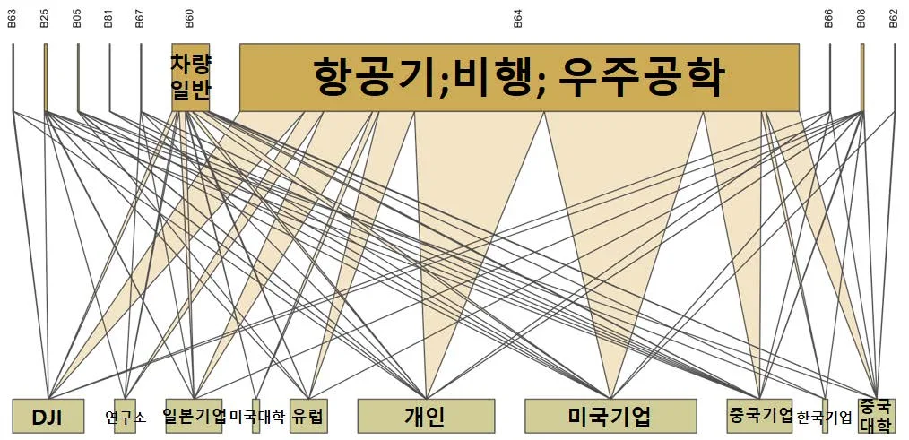
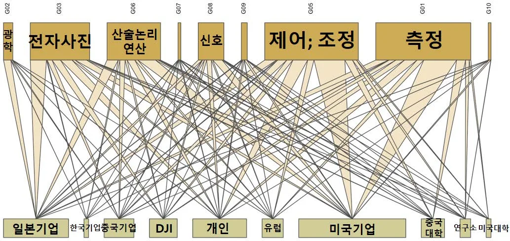
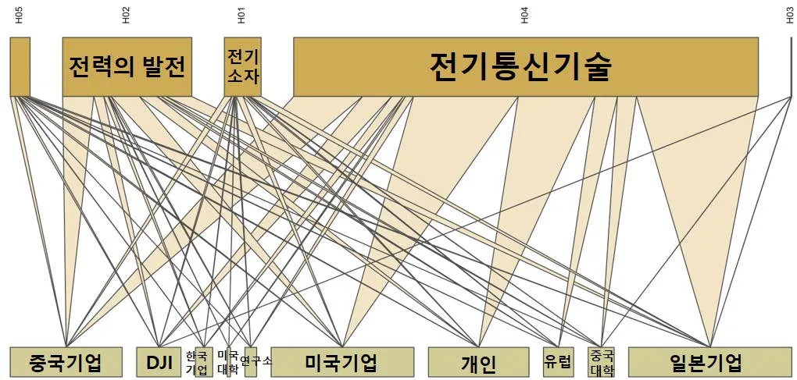
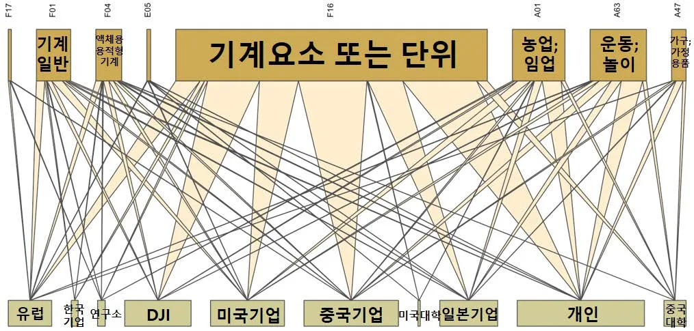

제 1장 서론
1.1 연구배경
무인항공산업은 역동적인 성장이 전망되는 산업이다. 관련 기술의 발전과 사회수요 변화로 인해 드론(Drone) 시장이 가파르게 성장하고 있으며, 드론의 활용 범위도 확장되고 있다. 과거 무인항공기는 군사용 목적의 군수용 드론 중심이었지만, 미래에는 취미활동, 방송 촬영, 배달 등 민간상업용 드론을 중심으로 시장이 크게성장할 것으로 예상한다. 미국 방위산업 시장분석업체인 틸그룹(Teal Group)에 따르면 세계 무인항공기 시장은 2019년-2024년간 10% 이상의 연평균 복합 성장률 (CAGR)로 성장할 전망이다.
향후 드론 산업은 센서, 로봇, 인공지능(AI) 등 첨단 IT기술 및 서비스와 융합하면서 신규 비즈니스 모델을 창출할 것으로 보인다. 공격적인 연구개발을 통하여 체공시간, 경량화 등 기술적 문제들이 해결되고 정부의 규제완화가 동반된다면 드론은 지금보다 훨씬 폭넓게 활용될 것이다.
시스템 종합 산업으로서 무인항공 분야는 국가의 미래 산업경쟁력을 결정할 핵심 요소 중 하나로 부상하고 있다. 무인항공 분야는 고부가 가치를 창출하는 지식기반 산업이다. 개발주기가 길고 자본 및 기술 측면에서 진입장벽이 높지만 진입성공 시 장기간의 안정적 수익을 창출할 수 있다(서강원, 최석철, 2012). 따라서 해당 산업의 경쟁에서 앞선다면 글로벌 시장에서 주도권을 확보하기 위한 성공적인요인이 될 것이다. 국가적 차원에서 시스템 종합 산업인 무인항공산업을 육성할수 있는 방안을 정교하게 마련해야 하는 과제가 있다. 이에 드론 산업에 대한 심층적인 고찰은 향후 미래 산업환경을 대비하기 위한 매우 유의미한 연구가 될 것이다.
1.2 연구 주제 선정
미국의 글로벌 기업들이 선도하고 있는 다른 4 차산업기술 분야와 달리민간상업용 드론 산업에서는 중국의 DJI 社가 선도하고있다. DJI 는 전 세계 민간용드론시장의 70% 가량을 점유하며 막강한 경쟁력을 가지고있다. 중국 DJI 의성공이 흥미로운 점은 일반적으로 제조업 후발주자로 인식되는 중국 기업이발빠르게 첨단산업을 선도하는데 성공한 사례이기 때문이다.
전세계 거대한 테크기업들은 미국에 집중되어 있다. 미국은 과학기술 수준에서전 세계 1위 국가로 평가된다. 지금까지 첨단제조업의 선도적인 역할을담당해왔으며 초기 제조 혁신에 있어 강점을 가지고 있다. 상위에 진입해 있는유럽, 아시아 등 미국 이외의 테크기업들이 있긴 하지만 그에 견주어 상당한기술수준을 보유한 미국 내 경쟁기업들이 존재한다. 따라서 미국 이외 국가에서최고 기술을 보유하며 세계 시장을 독점하는 기업이 있는 분야는 찾아보기어렵다. 군용 무인기의 경우 미국, 이스라엘 등의 전통적인 항공기 제작 기업 및기관이 강세를 보이고 있지만, 앞으로 대폭적인 성장이 예상되는 소형 취미용, 상업용 드론 분야에 있어서는 DJI와 상대할 경쟁기업이 없는 상황이다. 여기서민간 드론산업과 DJI의 특이성을 찾을 수 있다.
통시적으로 고찰하면 제조업 분야의 주도권 이전과 후발주자의 추격 현상은지속적으로 있어왔다. 최근에는 화웨이, 텐센트와 같이 후발주자로서 중국기업의가파른 성장과 기술 획득, 기술 역량 축적의 과정에 대해 많은 사례연구가 있다.
그렇지만 DJI가 민간상업용 드론시장에서 압도적인 주도권을 확보하고 있는현상은 신흥개도국의 제조업 추격현상과는 다른 독특한 양상으로 보인다.
일반적으로 중국 기업은 후발주자로서 선진국에서 일정 수준 이상 성장한산업을 중국시장의 빠른 성장과 정부의 막대한 연구개발 지원을 통해 추격하는입장에 있었다. 하지만 민간상업용 드론산업은 근래에 성장하기 시작한 초창기산업으로 미국을 비롯한 선발국가에서 성장하여 중국으로 주도권이 이전한현상으로 보기 어렵다. 또한 DJI는 모방자, 추격자의 역할이 아닌 시장선도자로서의 역할을 하고 있다. DJI는 민간용 드론 시장을 개척하고 시장의성장을 이끌어왔으며, 드론 업계의 정상을 차지하고 ‘Made in China’의 인식을바꾸어놓았다(송재두, 2018). 직접 혁신경로를 창조하는 행보를 보여주고 있다.
중국기업으로서 시장지배자가 되었다는 점은 매우 주목할 만한 현상이며, 이에 DJI의 사례를 연구하는 것은 의미가 클 것이다.
1.3 선행연구의 고찰
경쟁적인 산업 환경속에서 기업이 생존하기 위해서는 제품에 대한 종합적인특허전략 수립이 요구된다. 드론산업의 선도주자인 DJI 의 혁신전략을 분석하기위하여 DJI 가 출원한 특허와 이를 활용한 정보 분석이 유용할 것이다. 특허는어떠한 발명에 대해 부여하는 독점적인 권리이며 기술혁신을 반영하는 대표적인지표이다(Ernst, 2003). 특허 정보는 제목, 출원인, 국가, 출원년도, 요약, 대표청구항, 국제특허분류, 인용 정보 등으로 구성되어 있으며, 이의 구성요소를바탕으로 분석함으로써 기술 변화의 역동성, 기술 수준, 경제적 가치 등을 파악할수 있기 때문에 R&D 및 기술관련 전략을 담당하는 실무자에게 있어 중요한정보를 제공한다(최진호, 김희수, 임남규, 2011). 특히 각 특허는 발명의 기술을 IPC(International Patent Code)라는 국제적인 분류체계에 기준하여 명시하기때문에 기술의 단위를 구분하여 분석하기에 용이하다.
특허에 기재된 지표 중 지식흐름과 확산의 척도로서 특허 인용정보를 활용할 수있다. 특허 출원자는 선행지식에 대한 정보를 공개해야 할 의무를 가지며, 특허간 인용관계는 특허를 구성하는 지식들 간 확산의 궤적을 반영한다(Jaffe and Trajtenberg 2005). 특허 출원건수가 연구개발 활동을 통해 축적된 혁신주체의지식재산 스톡(stock)과 혁신성과를 반영한다면 특허의 상호 인용관계는 혁신주체가 보유하고 있는 지식재산의 흐름(flow)과 이를 통한 새로운 지식 창출가능성을 반영한다(김지수, 변창욱, 2018). 따라서 특허의 인용분석 정보는 기업의혁신 성과를 이해하도록 돕는 적절한 도구라고 할 수 있다.
특허 정보에 포함되어 있는 인용문헌의 정보를 이용하면 조사하고자 하는특허가 인용한 특허와 피인용된 특허들을 순차적으로 분석할 수 있다. 이들의상관관계를 도식화 함으로써 기술의 파급효과를 추적하고, 기술의 성숙 곡선을추정할 수 있다. 이러한 특성을 활용하여 인용특허를 기반으로 핵심기술을파악하고, 기술발전에 대한 동향을 분석하는 연구가 활성화 되고 있는추세이다(Huang and Chen, 2003; Lee, D. H et al., 2012). 본 연구에서는 특허를 통해 지식 흐름의 구조적 특징을 분석하기 위하여네트워크 분석을 활용했다. 네트워크 분석(Network analysis)은 특정 주체의독립적 성격에 집중하기 보다 주체 간에 형성된 일정한 관계의 성격을 구조적관점에서 살펴보는 방법론이다. 특정 주체나 기술들 간 관계에서 나타나는 복잡한상호연계 구조를 규명하기에 적합하며, 특허 인용 네트워크와 같이 기술 연계구조를 통해 주체 간 흐름을 측정하기 위한 분석에 많이 활용된다(조용래, 김의석, 2014). 연결개체(노드)와 연결관계(링크)의 관계를 시각적으로 보여줌으로써얼마나 많은 기술이 연결되어 있는지, 지식의 흐름이 얼마나 활발한 지 이해할 수있도록 한다.
제 2 장 연구대상
2.1 DJI의 성장
DJI(大疆创新, SZ DJI Technology Co., Ltd.)는 2006 년, 왕타오(Frank Wang)가 중국선전에서 설립된 회사로, 세계적인 드론 연구개발 및 생산기업이다. 뛰어난 드론제조 기술과 R&D 역량, 세련된 디자인, 경쟁력 있는 가격으로 드론 시장에서독보적인 위치를 점하고 있으며, 출시하는 제품마다 시장에 새로운 표준을제시하고 있다. 드론 핵심부품인 FC(Flight Controller)를 제작하는 일부터 시작해서인공지능과 자체 정보처리 기능을 탑재한 완제품 제작까지 단 3 년만이소요되었을 정도로 DJI 는 놀라운 혁신을 이루었다(Ito Asei, 일본 도쿄대사회과학연구소).
DJI는 전체 종업원의 33%에 해당 하는 2600여명을 전문 연구 인력으로 구성하고, 매년 매출액의 7%를 R&D에 투자하는 등 기술력 확보를 최우선으로 하는 기업의 원칙을 고수하고 있다. 이는 “덩치가 커져도 연구 인력 비중 3분의 1을 유지한다”는 CEO의 철학에서도 확인할 수 있다. 이러한 연구개발의 성과로 DJI는 평균 5~6개월마다 혁신적인 제품을 내놓고 있으며, 중국의 대표적인 유니콘기업으로 떠올랐다(송재두, 2018). 창업 초기 불과 10여명이었던 직원 수는 10여년 만에 8,000명을 넘었다. DJI는 2010년 300만위안의 매출에서 2013년 8억 위안, 2015년에는 10억달러를 돌파, 2017년에는 28.3억달러를 달성하며 무서운 속도로 성장했다.
<그림 2> DJI 매출(단위: billion)
(DJI는 비상장사로 매출정보는 각종 언론사 보도자료 등을 종합)
2014년에 발표한 골드만삭스의 자료에서도 DJI는 세계 상업용 드론시장의 70%
를 점유하며 2위 기업인 Parrot을 큰 격차로 따돌리고 있다는 것을 확인할 수 있다. 드론시장 조사업체 DRONII에 따르면 2019년 미국 드론 시장 점유율에서 DJI 가 차지하는 비율은 무려 76.8%에 달한다.
2.2 DJI의 제품개발과 시장창출
DJI는 혁신적인 제품개발을 통해 시장을 개척해 왔다. DJI는 군수용에 국한되어있던 협소한 드론 시장을 개인〮산업〮공공의 민수용품으로 확장시켰다. 초보자도사용하기 편리하게 UI/UX를 제고하여 소비자층을 전문가에서 비전문가로 확대했다. 초기 드론 분야는 완제품이라는 개념이 없었고, 개인이 부품을 찾아 조립하고필요한 소프트웨어 코드를 직접 다운로드 받아야 하는 등 DIY 방식이 주를 이루고 있어 소비자들의 편의성이 매우 낮았다(Fobes, 2015). DJI는 별도의 조립 없이바로 비행이 가능하고, 각종 센서와 조종 송수신기, 카메라와 영상 송수신기까지장착한 일체형 완제품 드론인 팬텀을 출시하여 소비자의 큰 반향을 불러일으켰다.
DJI는 영상촬영 드론에 특화된 비행제어기술, 방진기술, 카메라 기술 등 핵심 기술의 자체개발에 성공했으며, 최근 모션 인식 등의 차세대 드론 기술개발에도 적극적으로 투자하고 있다(백서인, 손은정, 김지은, 2019). 이뿐 아니라 산업전방위로사업영역을 넓히고 있다. 밸류체인 구조를 살펴보면, DJI는 드론산업의 업스트림 (원자재, 부품생산 제조), 미들스트림(시스템 모듈, 주변시설과 드론 완제품의 연구개발과 제조), 다운스트림(각종 서비스)에 이르기까지 거의 전 분야에서 활약하고있다(艾瑞咨询(2016)).
최근 DJI는 드론 플랫폼을 개발하여 토탈 솔루션 기업으로 큰 성장의 흐름을 이어가고 있다. 정보를 취합하는 사업영역에서 드론은 매우 효율적인 도구이기에 DJI는 플랫폼 기업으로 성장할 잠재력을 가지고 있다. DJI는 SDK(Software Development Kit: 소프트웨어 개발도구) 개발 플랫폼을 제공하여 전세계 개발자들이 DJI 플랫폼에 모이도록 한다. 비행작업을 수행하고 데이터를 관리하는 스테이션 프로(GS Pro), 산업용 드론 통합관리를 위한 플라이트 허브(Flight Hub), 지형데이터 맵핑 및 분석 소프트웨어인 DJI 테라(DJI Terra) 등을 공개하며 드론 플랫폼생태계를 확장하고 있다. 기업은 이러한 솔루션을 활용하여 에너지, 안전, 건설 등의 다양한 임무에 DJI 드론을 활용하고 있다.
제 3 장 특허 분석 결과
3.1 분석방법 및 데이터 수집
본 연구에서는 DJI 의 기술혁신과 혁신역량의 축적에 대해 종합적으로 분석하고이를 바탕으로 시사점을 도출하고자 한다. 기업의 기술을 대변하는 특허자료를심층적으로 분석하여 DJI 의 보유 기술과 특허 출원 경향을 살펴본다. 또한네트워크 분석을 통해 DJI 의 기술혁신에 영향을 주는 주체간 기술 흐름의 현황을파악한다.
DJI 의 특허분석을 위해 특허데이터를 수집하였으며, 특허검색사이트 Keywert(https://www.keywert.com/)와 Wisdomain(http://wisdomain.com/)을활용했다. “DJI” 혹은 “SHENZHEN DAJIANG”이 포함된 출원인을 기준으로 등록예정이거나 등록된 특허만을 대상으로 하였다. DJI 가 미국, 중국, 일본, 한국, 유럽에 출원한 특허를 수집했으며 이 결과 총 1163 건의 특허정보가 분석 대상이되었다.
3.2 특허 일반 분석
출원 동향을 살펴보고자 2010 년 이후부터 출원한 특허를 연도별로 분류해보았다. 2017 년 부터 특허 수가 감소한 이유는 심사 중인 특허가 존재하여 분석대상에 반영되지 않았기 때문으로 보인다. 2014 년을 기점으로 특허 수가급증하는 양상을 확인할 수 있다. DJI 의 첫 일체형 드론이 출시된 2013 년이후이다.
<표 1 > DJI의 출원 연도별 특허 현황(2010-2017))
연도 2010 2011 2012 2013 2014 2015 2016 2017
개수 4 13 4 43 328 224 269 170 국가별 특허출원 수는 중국이 39%로 가장 많았고, 미국이 29% 일본 26%
유럽이 5%로 나타났다. 초기에는 자국(중국) 출원이 다수를 차지하였으나, 2016 년이후 중국 단독 특허 수는 거의 증가하지 않았다. 점차 시간이 갈수록 자국 단독특허 없이 바로 PCT 로 출원하고 이후 재차 미국에 출원하는 형태로 출원 전략을변경하며 실제 드론 시장에서의 법적 보호를 강화해 나간 것으로 보인다. DJI 가본격적으로 제품을 내놓으며 특허가 급증하는 시기인 2014 년 이후로 미국특허가 빠르게 증가하는 것을 볼 수 있었다. 특허는 속지주의의 원칙상 반드시특허권을 획득하고자 하는 나라에 출원하여 권리를 취득해야 해당국에서 독점적, 배타적 권리를 확보할 수 있다. 이를 고려했을 때 미국을 전략적인 시장으로고려하여 미국 진출을 주요하게 판단한다는 것을 알 수 있다. 결과적으로 2015 년당시에 DJI 매출의 70%는 아시아 밖의 지역에서 올리고 있었고, 2017 년해외매출액의 비중은 전체 매출의 80%를 차지했다(Shao, 2015; 오광진, 2018). DJI 가 출원한 특허를 메인 IPC 로(IPC 4 자리) 분류해 빈도수가 많은 순서로정렬해 보았다. IPC 기반의 분석에 따르면 DJI 의 특허는 기본적으로 비행분야(B64), 통신분야(H04), 제어조정 분야(G05), 전자사진 분야(G03), 기계요소 분야(F16)에집중되어 있음을 확인할 수 있다. B64 는 ‘항공기; 비행; 우주공학’ 기술로 경항공기, 비행기, 헬리콥터 등에 대한 기술을 포함하고 있다. 해당 코드(B64)에서 출원한특허가 22%에 달했는데, DJI 의 드론기술이 비행체의 경량화와 배터리의 지속성, 속도·조종 등 항공비행 기술과 상당히 유사하기 때문인 것으로 볼 수 있다. H04 는 ‘전기통신기술’로 방송통신, 무선통신 네트워크를 포함하며, G05 는 ‘제어;조정’으로무선항행 시스템의 주파수를 조정하는 조정계를 포함하고 있다. F16 로 구분된특허는 드론을 지지하는 장비에 관한 특허였다.
<표 2> 메인 IPC 별 DJI 특허 현황
순위 IPC 코드 내용 빈도수 비율
1 B64C 비행기; 헬리콥터 152 13.1%
2 H04N 화상통신 148 12.7%
3 G05D 비전기적 변량의 제어 또는 조정계 135 11.6%
항공기의 장비; 비행복; 패러슈트; 동력
4 B64D 장치 또는 추진전달 기구의 설비 또는 86 7.4%
장치사진을 촬영하기 위하여 또는 사진을
4 G03B 86 7.4%
투영하여 직시하기 위한 장치 또는 배치엔진, 기계 장치에서의 프레임, 스탠드
5 F16M 47 4%
또는 지지대
3.3 기술별 분석
DJI 의 보유 특허 현황을 더욱 깊이 살펴보기 위해 특허법률사무소의 자료를참고하여 기술분류포를 도출했다.
<표 3> DJI 보유특허 기술분류
대분류 기술 분류 기술 내용파워 배터리제어, 배터리구성무인기본체 비행체(플랫폼) 바디, 랜딩기어, 프로펠러, 추진체(모터)
비행제어 비행플랜(예: 경로설정), 비행제어(예: 떨림방지)
전자통신 소음제어, 통합프로세서센서, 카메라(촬영), 짐벌, 분사장치(스모그 생성장치/ 임무장비스프레이 장치), 촬영 데이터 저장기타 지상지원장비(조종기, 도킹스테이션), 서비스(관광, 정찰 등)
검색을 통해 도출된 DJI 의 특허를 <표 3>을 기준으로 파워, 비행체(플랫폼), 비행제어, 전자통신, 임무장비, 지상지원장비, 서비스 이상 7 개의 기술항목으로분류한 후, 무인기본체의 5 개 주요 기술의 연도별 출원 경향을 살펴보았다. 분석결과, 임무장비 기술과 관련된 특허가 약 38.3%로 가장 많았으며, 비행제어(23.9%), 비행체(플랫폼)(23.4%), 파워(7.5%), 전자통신(4.8%) 특허가 그뒤를 따랐다.
<그림 2> DJI 기술별 특허 출원 누적건수

특허 건수(누적)
2010 2011 2012 2013 2014 2015 2016 2017 출원 연도파워 비행체(플랫폼) 비행제어 전자통신 임무장비 DJI 특허 건수의 증가와 함께 특허 분야도 확장되고 있음을 알 수 있었다.
기술별 특허출원 누적건수를 보면 2013 년까지 비행체(플랫폼) 관련 하드웨어구성에 대한 출원이 많았으나, DJI 가 본격적으로 특허출원에 열을 올리기 시작한 2014 년 이후로는 임무장비기술이 전체 출원 건수를 견인하고 있다. 센서, 카메라(촬영), 짐벌, 분사장치, 데이터 저장 장치 등에 대한 관심이 높아지고있음을 알 수 있다. 향후 DJI 의 임무장비 융합기술에 대한 지식재산권 생산이지속적으로 증가하고, 이것을 드론 관련 서비스에 활용할 것으로 예측할 수 있다.
임무장비로 분류된 특허의 내용을 구체적으로 살펴보면 카메라, 짐벌 등촬영기술에 대한 특허가 압도적이다. 2015 년 이후로는 순수 이미지처리 및데이터 저장기술 등 소프트웨어 기술도 다수 출원이 진행되었다. 분사장치 등농업용 임무장비에 관한 기술 출원도 점차 증가하고 있으며, 조종기 등지상지원장비 기술 특허도 점차 비중이 커지고 있는 추세이다. 소수이지만 드론을활용한 가상 관광(Virtual Sightseeing) 등 서비스에 관한 특허출원도 눈에 띈다. 점차 DJI 의 특허 적용 대상이 드론 제작에 한정되지 않는 포괄적인 기술 내용을포함해가고 있음을 보여준다.
3.4 인용특허 네트워크 분석
3.4.1 인용특허 양적 분석
특허 명세서에는 인용 특허가 목록으로 되어있다. 조사하고자 하는 특허가인용하고 있는 선행문헌 및 선행기술이다. 인용관계는 각 출원 주체간 기술의이동 및 기술융합을 나타내며(Jaffe and Trajtenberg, 2005) 이를 관찰하면 지식 및기술의 선행자나 후생자를 알 수 있다. 다시 말해 인용 특허정보를 이용하면관련된 특허와 문헌 기술 내용을 확인하여 많은 정보를 얻을 수 있다.
DJI 가 출원한 특허의 인용관계를 분석함으로써 선행기술과 해당 기술의 동향을파악할 수 있다. DJI 는 다양한 기술주체들로부터 포괄적인 기술지식을 습득하고, 이를 융합하고 있었다. 먼저 DJI 의 인용특허와 피인용특허를 봤을 때, 인용건수는높지만 그에 비해 피인용건수는 적었다. 총 인용문헌수는 약 2 만건이고, 피인용문헌수는 약 5 천건으로 인용문헌수가 4 배 가량 많은 것으로 나타났다.
이러한 인용, 피인용 특허 비중은 DJI 의 기술이 원천기술의 성격보다는선행기술과 연계하여 응용/개량적으로 개발된 기술의 성격이 강하다는 것을의미한다. 인용 특허의 비중이 높은 것은 항공기 제작기술 등 기존 기술에 대한특허 인용이 많기 때문이다. 소형 드론은 항공기 및 군용 무인기의 항법, 제어 및하드웨어 설계, 제작기술을 기반으로 한다. 민간 상업용 드론 산업은 비교적새로운 분야이지만 기존의 항공우주분야의 원천기술과 상당히 유사하여 범위가확장된 응용/개량 기술이라는 측면으로도 생각할 수 있다.
<표 4> 기술성숙도별 특허 수(비중)
피인용(Forward Citation)
분류별 특허 비중 Low High 인용 High 응용/개량 기술 경쟁기/성숙 단계
(Backward Citation)
Low 미성숙 단계/변방 기술 원천 기술 (백서인 외 5 인, 2018, 2018 년 중국(중화권) 첨단기술 모니터링 및 DB 구축사업 참고) 이번에는 DJI가 인용한 특허의 출원인을 구분하여 봄으로써 기술이 이동하며 발전하는 양태를 분석해보았다. 특허 데이터는 출원 주체에 의해 표명된 기술이기때문에 혁신의 핵심 주체와 주체들 간 매개 관계를 분석하는데 유용하게 사용될수 있다. DJI가 인용한 약 2만건의 특허를 출원인으로 분류했다. 출원인 분류 기준은 크게 기업, 대학, 공공연구소 및 정부기관, 개인으로 4가지이다. 세부적으로 기업과 대학은 국가별로 구분을 진행했고 분석결과는 <표 5>에 제시되어 있다.
출원인 식별이 불가능한 건수를 제외하고 총 18,638건을 분석한 결과 기업 특허를 인용한 경우가 62.3%로 가장 많았고, 개인이 23.7%, 대학이 10.2%, 공공연구소가 3.8%를 차지하고 있었다. 이를 통해 DJI의 기술 생성에 있어 기업의 역할이 가장 크다는 것을 파악할 수 있다.
기업 인용 특허 중 3분의 1 이상이 미국 기업의 특허였다. DJI 특허 1100여건이미국 기업 특허 4900건 이상을 인용했다. 즉, DJI의 특허 1건 당 평균 4개의 미국기술을 인용했다. 일본 기업의 특허 인용 비중도 3000건 이상으로 매우 높게 나타났다. DJI의 기술과 지식의 축적에 있어 자국(중국)을 제외한다면, 미국기업과 일본기업이 핵심적인 역할을 했음을 의미한다. 그 다음으로는 개인이 DJI의 기술 생성에 영향을 미쳤으며, 대학과 정부 및 연구소는 이에 비해 기술 지식의 교류가적었다.
<표 5> 출원 주체별 특허 인용건수
출원인 및 인용건수 합계기타미국 중국 일본 유럽 한국 13484 건
기업 국가 (62.3%)
4983 건 3695 건 3059 1064 265 418 (36.5%) (27%) (24.4%) (7.8%) (2%) (3%)
미국 중국 기타국가 1394 건
대학 202 건 1063 건 129 건 (10.2%)
(1.5%) (7.8%) (0.9%)
공공연구소 518 건 518 건및 정부기관 (3.8%) (3.8%)
3242 건 3242 건
개인 (23.7) (23.7)
18638 건
합계 - (100%)
특허의 건수가 증가함에 따라 인용문헌의 개수도 증가하는 추세를 보였다. 2014 년에는 일본기업의 특허 인용건수가 많은데, 이것은 Canon과 같은 일본기업의 카메라 및 이미지 처리 기술에 대한 인용이 많기 때문이다. 미국의 경우 꾸준히 많은 건수의 인용문헌수가 확인되는데 이것을 더 자세히 들여다 보면, Honeywell, Boeing와 같은 항공우주 관련 기업과 글로벌 통신 기업들의 특허를 가장 많이 인용한 것으로 나왔다. DJI가 미국과 일본을 비롯한 외부로부터의 선행 특허기술을적극적으로 인용했음을 알 수 있다.
또한 중국기업 인용건수의 높은 증가율이 눈에 띄는데, 이 중에서도 DJI 자사 인용문헌 수가 매우 높았다. DJI가 자사의 특허를 인용한 문헌수가 중국 전체 기업특허를 인용한 수의 40% 이상이었으며, 매년 DJI 자사 인용 특허가 빠르게 증가하는 모습을 보였다. DJI가 미국, 일본 등 선진국의 드론 관련 기술지식을 흡수하고 핵심 기술을 확보한 후 자사 인용을 통해 권리를 강화해 나가는 것으로 짐작할 수 있다.
<그림 3> 연도별 특허 인용건수 추이

929 964 1000 902
인용 건수 614 617 605 600 503 461 446 400 262 215 227 175 170 200 107 2010 2011 2012 2013 2014 2015 2016 2017 출원 연도미국 중국 일본 유럽
3.4.2 인용특허 네트워크 시각화
기술과 인용특허 출원주체간의 관계, 기술지식의 흐름을 분석하기 위한 방법으로인용특허 네트워크 분석을 시행했다. 네트워크 시각화를 통해 기술과 인용특허 출원 주체와의 관계를 알아보았고, 이를 통해 DJI 기술의 이동과 융합 경로를 파악하고자 했다. 해당 네트워크 분석에서는 노드를 2개 그룹으로 나누었는데, 상단노드는 DJI 특허기술의 IPC이고 하단노드는 인용특허의 출원 주체이다. 링크는 IPC 기술과 인용특허의 출원 주체간 연계라고 설명할 수 있다. 노드의 크기가 클수록해당 노드의 발생빈도가 높다는 것을 의미하며, 링크의 굵기가 굵을수록 노드 간연관성이 강하다는 것을 나타낸다. 따라서 노드를 통해 DJI 특허 기술의 비중과인용특허의 출원주체 별 비중을 알 수 있으며, 링크를 통해 DJI가 해당 기술에서각각 어떤 주체의 기술을 인용했는지 파악할 수 있다.
네트워크 분석에 활용된 2개 그룹 노드의 구체적 내용은 <부록1>과 같다. 상단노드는 IPC 중분류 코드를 이용하여 특허의 기술내용을 구분한 것이다. 하단 코드는 DJI가 인용한 특허의 출원주체들로 총 10개의 주체로 나누었다. 미국기업, DJI 를 제외한 중국기업, 일본기업, 한국기업, 유럽기업 등 기업이 출원한 특허, 미국대학, 중국대학 등 대학출원특허, 공공연구소 및 정부기관 특허, DJI 자사인용특허, 그리고 개인출원특허이다.
이를 활용한 네트워크 시각화맵을 도출하여 DJI 특허 기술이 다양한 혁신 주체와 연계되어 있음을 시각적으로 확인할 수 있었다. 이를 통해 DJI의 특허는 항공기; 비행 기술, 전기통신기술, 제어;조정기술, 측정기술에 관한 특허가 많음을 확인할 수 있다. 또한 미국기업, 일본기업, 개인출원특허를 다수 인용한 것을 확인할수 있다.
상단노드인 IPC를 4개 그룹으로 분리하여 분석해 보았다. B(처리조작), G(물리학), H(전기), A·E·F(생활필수품·고정구조물·기계공학 등) 이상 4가지로 분리하여 시각화했고, 이것이 <그림 4-7>에 나타나 있다. <그림 4>는 B(처리조작) 기술 분류만을따로 네트워크 분석을 한 것이다. 예상대로 항공기; 비행; 우주공학기술로 분류된특허가 압도적으로 많았다. 해당 특허는 미국기업과의 링크가 가장 굵다. 드론의가장 핵심적인 기술이라고 볼 수 있는 항공우주공학 기술은 미국기업의 선행기술을 가장 많이 인용한 것으로 확인할 수 있었다.
다시 말해 중국의 DJI가 글로벌 마켓을 선점하고 있지만, 이와 별개로 미국은 무인항공분야의 원천기술을 보유하며 지식의 초기 확산자 역할을 수행하고 있다는의미로 해석할 수 있다. 미국기업이 새로운 기술의 탄생에 있어 지대한 역할을 하며 다른 주체를 견인하고 있음을 확인할 수 있었다.
<그림 4> 처리조작 기술(IPC: B) 네트워크 시각화
<그림 5>의 G(물리학) 기술 분류의 네트워크 분석에서는 제어, 조정과 측정기술

의 빈도수가 가장 높았다. 해당 기술도 마찬가지로 미국기업과 연결되어 있는 링크의 굵기가 가장 굵은 것으로 확인되어, 미국기업의 기술지식 수용이 진행된 것을 확인할 수 있었다. 눈에 띄는 부분은 전자사진기술, 광학기술 부분으로 일본기업과의 연결관계가 가장 강하게 나타났다. 이는 드론의 항공 촬영기술과 직접적으로 연관되어 있는 기술이다. DJI가 촬영 기술과 관련된 부분은 일본기업에 강하게영향 받았다는 것을 알 수 있다. 해당 분야는 일본이 전통적 강자임을 확인할 수있었다.
<그림 5> 물리학 기술(IPC: G) 네트워크 시각화

<그림 6>로 볼 수 있는 H(전기) 기술 분류에서는 정보통신기술의 빈도수가 가장
많았고 전력의 발전 기술도 다수 보였다. 전기통신기술은 화상통신, 촬영 데이터관련 기술과 연관되어있다. 전기통신기술은 일본기업과의 연결관계가 가장 강하며, 미국기업과의 관계도 강하게 나타났다. 화상통신과 촬영 데이터 통신기술에 있어일본과 미국기업이 중요한 기술을 보유하고 있음을 알 수 있었다. 전력의 발전은드론의 배터리와 관련된 기술인데 해당 기술은 중국기업(중국기업+DJI) 기술의 인용이 가장 많았다. 일반적으로 드론은 리튬폴리머(LiPo) 배터리를 사용한다. 리튬폴리머는 점차 활용이 증가될 것으로 예측되는 차세대 전지이다. 인용 네트워크분석을 통해 이 리튬폴리머 배터리 기술에서 중국이 높은 기술력과 경쟁력을 보유하고 있다는 것을 알 수 있다.
<그림 6> 전기 기술(IPC: H) 네트워크 시각화
<그림 7>에서는 비교적 빈도수가 적은 A·E·F(생활필수품·고정구조물·기계공학 등)
기술로 분류되는 특허의 네트워크 분석을 함께 보았다. 기계요소 기술의 빈도수가높은데, 이 기술은 드론 안정화를 위한 지지 기구 기술과 카메라 고정장치 기술이주로 포함되어있다. 드론에 추가적인 특성과 가치를 부여하는 기술이라고 할 수있다. 해당 기술은 중국과 DJI 자체 기술 인용이 가장 강하게 나와, 중국기업의 높은 기술력을 알 수 있었다. 또한 자사인용을 많이 했다는 것은 해당특허가 기업의중요한 기초기술이라는 의미이다. DJI는 Osmo, Ronin과 같은 카메라 안정화 장치기술에서 세계적으로 가장 앞서 있다고 평가받는다. 특허분석 결과, 카메라 안정화 장치 기술이 DJI의 전략적인 기술이며, 경쟁사 대비 차별성을 부여하는 기술이라는 점을 확인할 수 있다.
특이한 점은 농업부분의 기술이 보이는데 여기에는 빈도수가 작긴 하지만 농업용 드론과 관련된 기술이 포함되어 있다. DJI는 시장규모가 큰 상업용 드론시장으로 사업을 확장하고 있다. 이에 2015년, 농업용 드론인 아그라스를 출시했으며 농약 살포, 파종 등 농업용 드론 분야에 박차를 가하고 있다. 농업기술 노드의 시각
화를 통해서도 이를 확인할 수 있다.
<그림 7> 생활필수품·고정구조물·기계공학 기술(IPC: A·E·F) 네트워크 시각화
제 4 장 결론 및 시사점
본 연구는 민간 드론분야에서 글로벌 1위 기업의 위치에 있는 DJI의 혁신에 대하여 분석하였다. DJI가 흥미로운 이유는 일반적으로 제조업 후발주자이자, 모듈화된 기술제품의 추격자로서의 장점을 보여왔던 중국기업이 첨단산업에서 퍼스트무버(First Mover)로 혁신에 성공한 사례이기 때문이다. DJI의 기술혁신을 분석하기위한 지표로 특허출원 데이터를 수집하였고, 특허 출원연도, 기술 분류코드, 인용정보 등의 정보를 이용하여 분석하였다. 특허분석을 통해 DJI가 보유한 드론기술과 기업 등 연구주체 간의 상호연계구조를 규명할 수 있었다. 이를 통하여 DJI의혁신사례를 분석한 결과는 다음과 같다.
첫째, DJI의 특허는 주요하게 5가지 기술로 분류될 수 있다. 각각 파워, 비행체(플랫폼), 비행제어, 전자통신, 임무장비기술이다. 초기에는 비행체(플랫폼) 중심으로특허출원이 많았으나, 2014년 이후로 임무장비기술에 대한 비중이 점차 증가하는것으로 나타났다. 임무장비로 분류된 특허에서 특히 카메라 및 짐벌 등 촬영기술에 대한 특허가 압도적이었으며, 이미지처리 및 데이터 저장기술 등 소프트웨어관련 기술도 다수 출원되었다. 이것을 통해 DJI가 드론제작을 위한 연구개발뿐만아니라 드론기술을 활용하여 확장 적용이 가능한 고부가가치 분야로의 R&D를 적극적으로 강화하고 있는 것을 알 수 있다.
둘째, 인용특허를 분석해 본 결과 DJI의 드론기술은 피인용문헌수에 비해 인용문헌수의 비중이 매우 높게 나타나 선행기술의 성능을 개선하는 응용/개량기술의성격이 크다는 것을 짐작하게 했다. 또한 DJI의 기술혁신에 있어 자국(중국)뿐만아니라 외부 기술의 역할이 매우 크다는 것을 발견하였다. DJI의 핵심적인 역량구축에 있어 미국 및 일본기업의 영향을 많이 받은 것으로 확인할 수 있었다.
셋째, 주체들 간의 기술흐름을 시각적으로 확인하기 위해 인용 네트워크 분석을수행한 결과, 드론의 본질적이고 핵심적인 기술이라고 할 수 있는 항공기, 우주공학, 제어기술은 미국기업의 선행기술을 가장 많이 인용한 것으로 나왔다. 또한 촬영 및 이미지 처리 부분의 기술은 일본기업의 선행기술을 가장 많이 인용한 것을확인할 수 있었다. 배터리기술과 카메라 고정장치 기술의 경우 중국기업과 DJI사의 자체적인 기술개발 성과를 확인할 수 있었다. 또한 DJI 자사 인용 특허가 증가하는 모습을 볼 수 있었다.
본 연구결과가 제시하는 함의는 다음과 같다.
첫째, DJI는 드론 관련 서비스를 제공하는 솔루션 사업(DaaS: Drone as a Service) 으로 이행할 것으로 예측된다. 드론을 활용한 가상 관광 특허를 소수 확인할 수있었고, 소프트웨어 중심의 임무장비 특허가 급증하는 양상을 확인할 수 있었다.
DJI는 드론을 통해 비행기록에 대한 데이터를 보유할 수 있으며 이를 분석하여정확한 인사이트를 도출해내는 소프트웨어 및 서비스를 개발할 잠재력이 크다. 향후 DJI는 하드웨어 제작기업에서 벗어나 드론 관련 종합 서비스, 플랫폼 사업자로확장할 것으로 기대된다.
둘째, DJI는 뛰어난 기술 소화⋅흡수 능력과 축적된 기술을 개발하는 역량을 가지고 있다고 판단된다. 인용분석을 통해 DJI가 드론의 핵심적인 기술을 축적하는 과정에서 다양한 외부의 선행기술을 인용하며 활발하게 지식을 수용하는 모습을 확인할 수 있었다. 이러한 흡수능력이 DJI사의 기술 역량을 확보하는데 큰 도움이되었을 것으로 보인다. 외부의 적합한 원천기술을 채택하고 흡수, 활용하기 위해서는 DJI 내부의 뛰어난 연구개발 역량 구축이 필연적이었을 것이다. 외부지식의소화⋅흡수 능력과 자체적인 연구개발 역량이 시너지를 내며 DJI의 기술 클러스터를 확대했으며, 이 과정에서 비약적인 발전을 이루었음을 짐작할 수 있다.
셋째, DJI는 기술을 흡수하는 단계에서 성장하여 자체적으로 필요한 기술을 융합하고 혁신을 주도하는 단계로 이행한 것으로 보인다. 종래의 기술추격국이 따르는기술축적의 경로에서 도약하여 새로운 기술지식을 창조하는 단계로 성장했다. 드론 배터리 기술과 일부 기계요소에서 중국의 기술 국산화와 DJI 원천기술의 축적을 확인할 수 있었다. 그동안 혁신의 관점에서 주목받지 못해왔던 중국기업이 활발하게 원천기술을 개발, 글로벌 표준을 전파하고 있는 것이다. 이러한 기술소유권 확보를 가속해 DJI생태계를 조성하면서 향후에도 시장에서 주요한 역할을 할것으로 기대된다.
참 고 문 헌서강원, 최석철. (2012). 수출을 고려한 무인항공기 연구개발 활성화 방안. 한국방위산업학회지, 19(1), 124-152.
송재두. (2018). 드론시장의 활대와 DJI의 성공요인, 한국융합인문학 제6권 제4호, pp.55-85 최진호, 김희수, 임남규. (2011). 기술예측을 위한 특허 키워드 네트워크 분석. 지능정보연구, 17(4), 227-240.
김지수, 변창욱. (2018), 특허 인용 관계를 이용한 지역별 지식 흐름의 측정과 시사점, 산업연구원.
조용래, 김의석. (2014). 특허 네트워크와 전략지표 분석을 통한 기업 기술융합 전략 연구. 지식재산연구, 9(4), 191-221.
백서인, 손은정, 김지은. (2019). 중국 과학기술·신산업 혁신 역량 분석: ① 중국의드론 굴기와 한국의 대응 전략. STEPI Insight, (235), 1-45.
백서인, 박환일, 송치웅, 손은정, 최해옥, 홍성범. (2018). 2018년 중국(중화권) 첨단기술 모니터링 및 DB 구축 사업. 과학기술정책연구원, 176-185.
배진우. (2016). UAV 핵심 기술 특허분석을 통한 기술 및 한국의 경쟁력 분석. 한국통신학회논문지, 41(12), 1868-1875.
박찬기. (2017). 특허 인용 네트워크 분석을 통한 무인항공분야 기술융합 전략 연구.
김선영, 전정환. (2019). 무인항공 분야 특허기술의 융합동향 분석. 기술혁신학회지, 22(6), 1138-1163.
김지수·변창욱. (2018). 특허 인용 관계를 이용한 지역별 지식 흐름의 측정과 시사점. 산업연구원최승욱. 손에 잡히는 특허 Report 드론 대해부
장악한 중국 ‘드론 괴물”, ChosunBiz (2018.07.15).
허문명, (2020). 드론 시장 독점 중국 DJI는 넘사벽… 간이침대 놓고 7000명이 연구 중” 이동준 서울대 교수로부터 듣는 드론 이야기, 신동아(2020.3.4).
Ernst, H. (2003), Patent information for strategic technology management, World Patent Information, 25(3), 233-242.
Jaffe, A. B. & Trajtenberg, M., Patents, citations, and innovations: A window on the knowledge economy, The MIT Press, 2005.
Huang, M. Chiang, L., & Chen, D., (2003), “Constructing a patent citation map using bibliographic coupling: A study of Taiwan’s high-tech companies”, Scientometrics, vol. 58, no. 3, pp. 489-506.
Lee, D. H., Seo, I. W., Choe, H. C., & Kim, H. D., “Collaboration network patterns and research performance: the case of Korean public research institutions”, Scientometrics, Vol.91(2012).
Fobes(2015.1.21) “ A Hot Seller in a Hot Market: Meet the World's Most Successful Seller of Drones” Reuters(2015.4.16) “China’s DJI drones flying high among US companies” <부록> 네트워크 분석에 활용한 노드상단 노드 : IPC 기술분류(대분류 및 중분류) 하단 노드 : 특허출원주체구분 기술 내용 구분 기술 내용 구분 A01 농업; 임업; 축산 등 미국기업
A 생활필수품 A47 가구; 가정용품 등 중국기업 A63 운동; 놀이; 오락 *DJI 제외 B05 무화 또는 분무일반 일본기업 B08 청소 한국기업 B25 수공구; 휴대용 동력 구동 공구 유럽기업 B60 차량일반 미국대학 B62 철도 이외의 노면 차량 중국대학
B 처리조작 B63 선박 또는 그 밖의 물 위에 뜨는 구조물 공공연구소 및 정부시설 B64 항공기; 비행; 우주공학 DJI B66 견인장치; 양중장치 개인 B67 용기의 개방 또는 밀봉; 액체의 취급 B81 마이크로 구조 기술
E 고정구조물 E05 자물쇠; 열쇠; 창 등 F01 기계 또는 기관 일반
기계공학, F04 액체용 용적형 기계
F
조명 등 F16 기계요소 또는 단위 F17 가스 또는 액체의 저장 또는 분배 G01 측정 G02 광학 G03 전자사진; 영화; 사진 G05 제어; 조정
G 물리학 G06 산술논리연산; 계산 G07 검사장치 G08 신호 G09 교육; 암호방법; 전시; 광고 G10 악기; 음향 H01 기본적 전기소자 H02 전력의 발전, 변환, 배전
H 전기 H03 기본전자회로 H04 전기통신기술 H05 분류되지 않은 전기기술